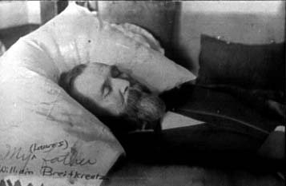

Here's a photograph of Carl Frederick William BREITKREUTZ. In the bottom left corner you can see his daughter Laura Adell nee Breitkreutz COOK's inscription "My Father", which had been annotated by her daughter Beverly nee Cook RUDGE as "My [Laura's] father [William Breitkreutz]."
Last updated on 26 Oct 1998